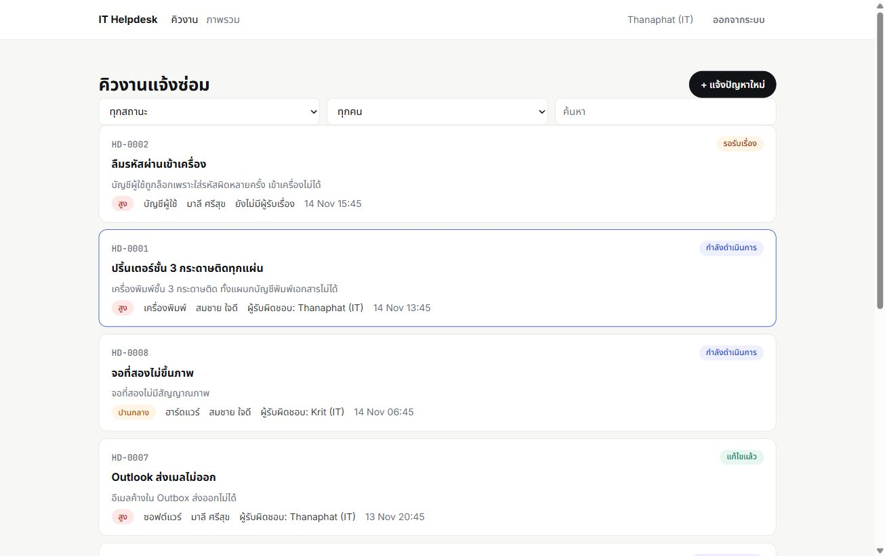

ใช้งานจริง · AI + Full-stack
IT Helpdesk · ระบบแจ้งซ่อมไอทีที่มี AI ช่วยคัดแยก
พนักงานแจ้งปัญหาด้วยภาษาไทยทั่วไป ระบบใช้ Claude จัดหมวดหมู่ ประเมินความเร่งด่วน สรุปเรื่อง และร่างคำตอบให้เจ้าหน้าที่ IT ตรวจก่อนส่ง พัฒนาจากปัญหาที่พบจริงในงานซัพพอร์ต
- เรียก Claude API แบบ structured output ตรวจผลด้วย Zod และมีกฎสำรองเมื่อ AI ใช้ไม่ได้
- SLA ตามความเร่งด่วน สถานะงานเดินตามลำดับ และสิทธิ์ 3 บทบาท
- ป้องกันการรับงานซ้ำซ้อนเมื่อเจ้าหน้าที่กดรับพร้อมกัน · 26 tests และ CI
NestJSAngularClaude APITypeORMPostgreSQLDocker
มีปุ่มบัญชีทดลองในหน้าเข้าสู่ระบบ · การเปิดครั้งแรกอาจใช้เวลาประมาณ 1 นาที